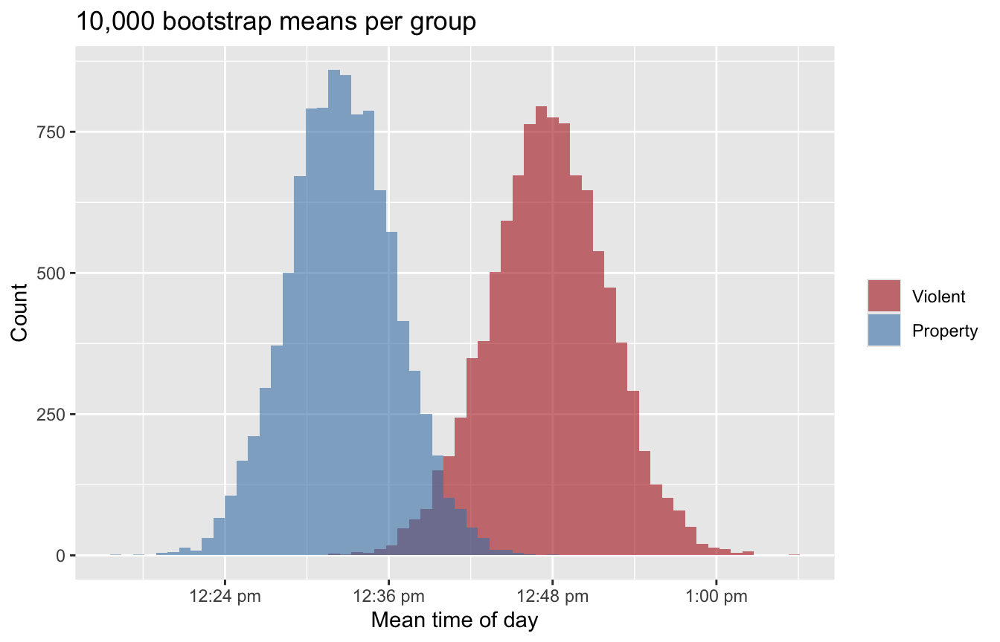
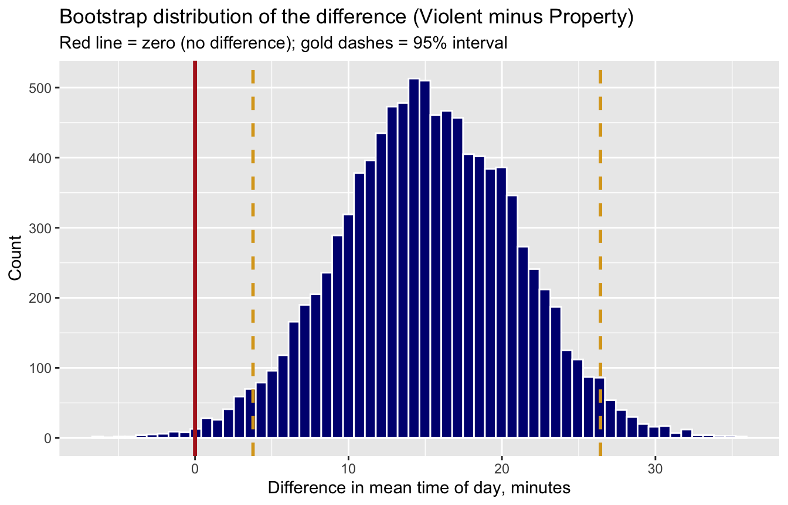
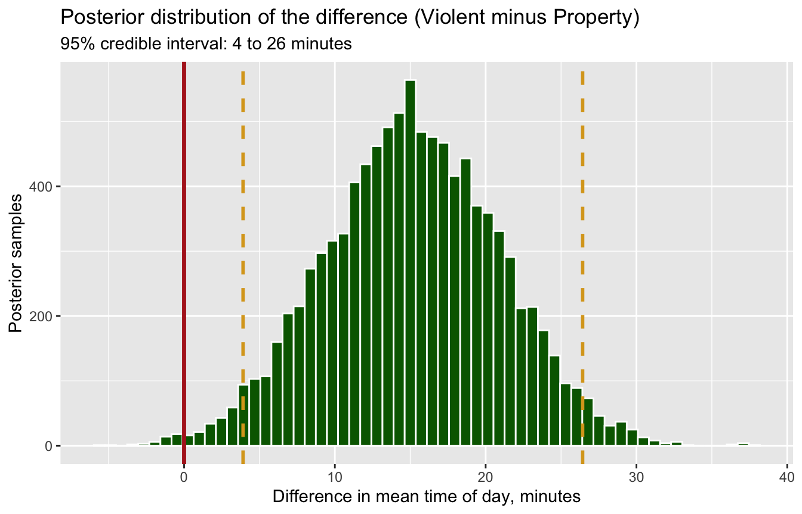
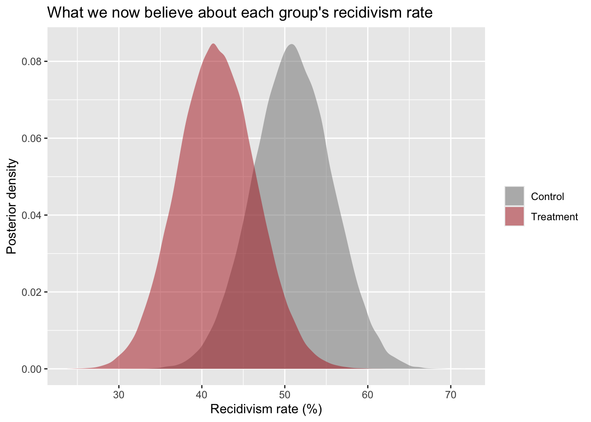

library(tidyverse)
library(BayesFactor) # install.packages("BayesFactor") — once, if you don't have it
set.seed(705)
crimes <- read_csv("https://smourtgos.github.io/crju705/data/chicago-crimes-2025.csv",
show_col_types = FALSE)
vp <- crimes |> filter(crime_category %in% c("Violent", "Property"))
violent_hours <- vp$hour[vp$crime_category == "Violent"]
property_hours <- vp$hour[vp$crime_category == "Property"]Demo Walkthrough · Session 6
Hypothesis testing, twice — t.test(), ttestBF(), and the collision between them
What this page is. The Session 6 lecture demos, written down step by step. Every chunk below is self-contained — copy any of them into your own R session and they run as-is. Use this page to catch up after a missed class, or to re-run what happened on screen at your own pace.
What you’ll build
- A bootstrap of the violent-vs-property time gap — 10,000 draws — and the same machinery run after erasing the gap
- The NHST verdict from
t.test(): p ≈ .009, “statistically significant” - The Bayesian verdict from
ttestBF()on the same data: mild evidence for the null — and why both are right - The posterior distribution for the difference, a credible interval, and the sentence Session 5 forbade
- The recidivism trial: p = 0.20 vs. a ~91% posterior probability the program works
Setup
The tidyverse plus BayesFactor, and the two groups from Session 5:
1 · The question, again
Session 5 asked whether violent crimes happen later in the day than property crimes:
# A tibble: 2 × 4
crime_category mean_hour sd_hour n
<chr> <dbl> <dbl> <int>
1 Violent 12.8 6.87 9148
2 Property 12.5 6.63 10371Violent incidents average about 15 minutes later. Session 5 gave us an interval for that gap. Today we get the test — a yes/no verdict machine — and then a second tradition that answers the question you probably meant to ask.
2 · Pretend we sampled repeatedly
Bootstrap each group’s mean 10,000 times — Session 4’s logic, applied to both groups at once:
boot <- tibble(
Violent = replicate(10000, mean(sample(violent_hours, replace = TRUE))),
Property = replicate(10000, mean(sample(property_hours, replace = TRUE)))
)
boot |>
pivot_longer(everything(), names_to = "group", values_to = "boot_mean") |>
ggplot(aes(boot_mean, fill = group)) +
geom_histogram(bins = 60, alpha = 0.6, position = "identity", color = NA) +
scale_fill_manual(values = c("steelblue", "firebrick")) +
labs(title = "10,000 bootstrap means per group",
x = "Mean hour of day", y = "Count", fill = NULL)
Subtract, pair by pair, and the difference gets its own distribution:
2.5% 97.5%
0.06299314 0.44033505 ci_boot <- quantile(boot_diff, c(0.025, 0.975))
ggplot(tibble(boot_diff), aes(boot_diff)) +
geom_histogram(bins = 60, fill = "navy", color = "white") +
geom_vline(xintercept = 0, color = "firebrick", linewidth = 1.2) +
geom_vline(xintercept = ci_boot, color = "goldenrod", linetype = 2, linewidth = 1) +
labs(title = "Bootstrap distribution of the difference (Violent − Property)",
subtitle = "Red line = zero (no difference); gold dashes = 95% interval",
x = "Difference in mean hour", y = "Count")
The middle 95% of plausible differences runs from about 0.06 to 0.44 hours — zero is not among the plausible values. The data lean toward a real (if small) gap.
What if the interval crossed zero?
Erase the real gap on purpose — shift every violent incident earlier by the observed difference — and re-run the exact same machinery:
2.5% 97.5%
-0.1899806 0.1916196 Now the interval runs from about −0.19 to +0.19 — zero sits comfortably inside, and the data are consistent with no difference. Formalize this intuition and you have invented the NHST.
3 · The Null Hypothesis Significance Test, in five steps
- State the null, \(H_0\): no difference. The boring world.
- State the alternative, \(H_1\): some difference — note how little we commit to.
- Compute a test statistic: \(t = \text{observed difference} / SE\) — the gap, in SE units.
- Ask: how often would \(|t|\) this large appear by luck in the boring world? That’s the p-value.
- Verdict: \(p < \alpha\) (usually .05) → “reject \(H_0\).” Otherwise → “fail to reject.”
Notice the machine only weighs evidence against the null — \(H_1\) never gets scored. And be precise about the p-value. It is the probability of data this extreme or more, if the null is true and the model is right. It is not the probability the null is true (that’s \(P(H_0 \mid \text{data})\), which frequentism never computes), not the probability the result “is due to chance,” and not a measure of how big the effect is — with enough data, microscopic effects earn microscopic p-values. Hold that thought.
t.test(hour ~ crime_category, data = vp)
Welch Two Sample t-test
data: hour by crime_category
t = -2.6061, df = 19021, p-value = 0.009164
alternative hypothesis: true difference in means between group Property and group Violent is not equal to 0
95 percent confidence interval:
-0.44272107 -0.06263688
sample estimates:
mean in group Property mean in group Violent
12.54334 12.79602 Reading the verdict: R orders groups alphabetically, so this tests Property − Violent (hence the negative signs — same finding as our bootstrap, mirrored). \(t = -2.61\), \(p = .009\). Under .05 — “statistically significant.” Reject the null. Publish the press release?
One caution before we do: everything above was scored against one curve — the null — and that tidy t-distribution itself assumes normal-enough data, independent observations, and well-behaved variances. NHST never asks what the alternative world looks like, and researchers rarely test the assumptions before trusting the p-value. (The lecture’s sketch figures make this vivid — see the Session 6 slides.)
4 · The Bayesian t-test: ttestBF()
Session 3’s Bayes’ theorem, now pointed at hypotheses: the p-value lives entirely in the likelihood, \(P(\text{data} \mid H_0)\), and never becomes \(P(H_0 \mid \text{data})\). Bayesian testing finishes the flip — at the price of a stated prior. Same question, second tradition. We supply the groups ourselves, so the direction is ours: x − y = Violent − Property.
bf <- ttestBF(x = violent_hours, y = property_hours)
bfBayes factor analysis
--------------
[1] Alt., r=0.707 : 0.4887026 ±0.05%
Against denominator:
Null, mu1-mu2 = 0
---
Bayes factor type: BFindepSample, JZSextractBF(bf)$bf # BF10: evidence for a difference vs. no difference[1] 0.48870261 / extractBF(bf)$bf # BF01: the same evidence, read the other way[1] 2.046234A Bayes factor is a ratio of predictions: how well did “some difference” predict these data versus “no difference”? Here \(BF_{10} \approx 0.49\) — below 1. The data are about 2 times more consistent with the null.
Rules of thumb for reading a BF: 1–3 barely worth mentioning · 3–10 moderate · 10–30 strong · 30–100 very strong · 100+ extreme — with the mirror image below 1 (so a BF₁₀ of 0.49, i.e. BF₀₁ ≈ 2, is “barely worth mentioning” evidence for the null).
Hold on — the p-value said “significant”
| Frequentist | Bayesian | |
|---|---|---|
| Result | \(p = .009\) → reject \(H_0\) | \(BF_{10} \approx 0.49\) → mild evidence for \(H_0\) |
Both machines ran on the same 19,500 cases. With that much data, the t-test can detect microscopic gaps — and 15 minutes is microscopic. The BF asks a harder question: did “a difference of plausible size” predict the data better than “exactly zero”? This close to zero, the null predicted slightly better. Neither is wrong. They answer different questions — and only one is impressed by sheer sample size.
5 · The posterior for the difference
The Bayes factor compares models. The posterior describes the difference itself, drawn by a sampler. (The machinery behind that sampler — MCMC — is in the optional appendix of the Session 6 slides, if you want to see how Bayes became computable.)
post <- suppressMessages(posterior(bf, iterations = 10000))
diff_post <- as.numeric(post[, "beta (x - y)"])
quantile(diff_post, c(0.025, 0.975)) 2.5% 97.5%
0.06518506 0.44053059 mean(diff_post > 0)[1] 0.9953cred <- quantile(diff_post, c(0.025, 0.975))
ggplot(tibble(diff_post), aes(diff_post)) +
geom_histogram(bins = 60, fill = "darkgreen", color = "white") +
geom_vline(xintercept = 0, color = "firebrick", linewidth = 1.2) +
geom_vline(xintercept = cred, color = "goldenrod", linetype = 2, linewidth = 1) +
labs(title = "Posterior distribution of the difference (Violent − Property, hours)",
subtitle = paste0("95% credible interval: ", round(cred[1], 2), " to ",
round(cred[2], 2), " hours"),
x = "Difference in mean hour", y = "Posterior samples")
Now say the sentence Session 5 forbade — legally: “There is a 95% probability the true difference lies between about 4 and 26 minutes.” Under the Bayesian license (given the model and prior), that is exactly what this credible interval means. And about 99.5% of the posterior sits above zero — the difference is almost certainly real. Real, but…
6 · Detectable, probable — and tiny
One more number every report owes its reader: a standardized effect size, Cohen’s d:
[1] 0.03742312Benchmarks: 0.2 “small” · 0.5 “medium” · 0.8 “large.” We measured ~0.04 — a ~15-minute shift against SDs of nearly 7 hours. Would any commander re-draw a patrol schedule over this? The full picture: the difference is probably real (posterior), utterly trivial (d), and “significant” (p) only because n is enormous. Report all three; never let the star do the talking.
7 · A cleaner collision: the recidivism trial
The setup: typical recidivism runs about 60% — that’s our prior belief. A randomized trial of a reentry program enrolls 100 treated, 100 control. Outcomes: control 50/100 reoffend, treatment 40/100. Ten percentage points — exactly the kind of effect a city would fund. Both traditions, go.
Frequentist:
2-sample test for equality of proportions with continuity correction
data: c(40, 50) out of c(100, 100)
X-squared = 1.6364, df = 1, p-value = 0.2008
alternative hypothesis: two.sided
95 percent confidence interval:
-0.24719748 0.04719748
sample estimates:
prop 1 prop 2
0.4 0.5 \(p = 0.20\) — not statistically significant. Honest reading: a 10-point gap like this could plausibly occur even if the program did nothing. The grant report writes itself — “no significant effect” — and the program probably dies there.
Bayesian: prior Beta(6, 4) — mean 0.6, worth about 10 observations. Update each group with its data, then ask the question we care about directly:
[1] 0.9122tibble(theta = c(theta_treat, theta_control),
group = rep(c("Treatment", "Control"), each = 10000)) |>
ggplot(aes(theta, fill = group)) +
geom_density(alpha = 0.5, color = NA) +
scale_fill_manual(values = c("gray50", "firebrick")) +
labs(title = "Posterior beliefs about each group's recidivism rate",
subtitle = "Overlap is real — and still, treatment sits lower in ~91% of draws",
x = "Recidivism probability (θ)", y = "Posterior density", fill = NULL)
Given the prior and the data, there is about a 91% probability the program reduces recidivism. Same data, different questions:
| Frequentist | Bayesian | |
|---|---|---|
| Verdict | \(p = 0.20\): cannot reject “no effect” | \(P(\text{treatment} < \text{control}) \approx 0.91\) |
| Plain English | “This gap could plausibly be luck” | “9-to-1 odds the program works” |
Both statements are true of the same data. Neither is a trick. A policymaker deciding whether to fund the program next year: which sentence actually helps?
8 · Sample size changes everything
The lecture closed with two animations you should watch in the Session 6 slides: fix a trivial true effect and just keep collecting data, and p still dives below .05 — given enough data, everything is “significant.” The same growing dataset through Bayesian glasses doesn’t flip a verdict; it sharpens the estimate, which visibly converges on “almost nothing.” The tininess stays in view. That’s Act III’s collision, run in slow motion — and it’s why, whatever tradition you use, you report the effect size, in units a human cares about.
Try a variation
- Run both tests on a new question: does
hourdiffer for domestic vs. non-domestic incidents? (t.test(hour ~ domestic, data = crimes)andttestBF(formula = hour ~ domestic, data = mutate(crimes, domestic = factor(domestic))).) Do the two traditions agree this time? - In the recidivism trial, flatten the prior to
Beta(1, 1)(no prior information). How does P(program works) move? (This is the prior’s weight, measured in one edit.) - Make the trial’s evidence stronger — treatment 35/100 instead of 40/100 — and re-run both. Where does p land now, and where does the posterior probability?
- Rerun the bootstrap with
replicate(100, …)instead of 10,000. How stable are the interval endpoints across reruns? (Monte Carlo error is a sample-size problem too.)